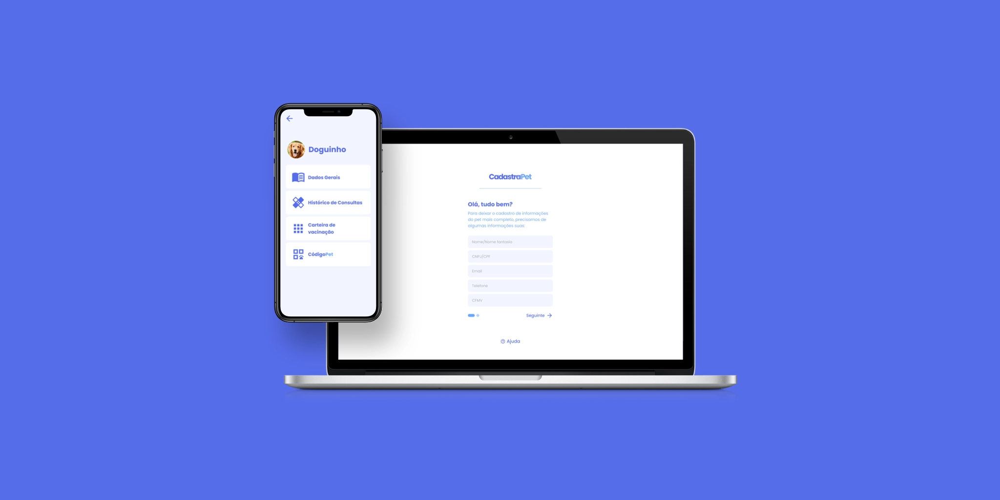
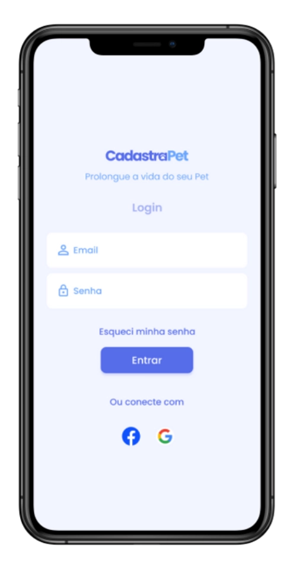
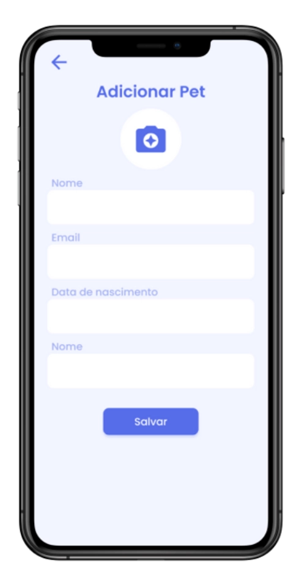
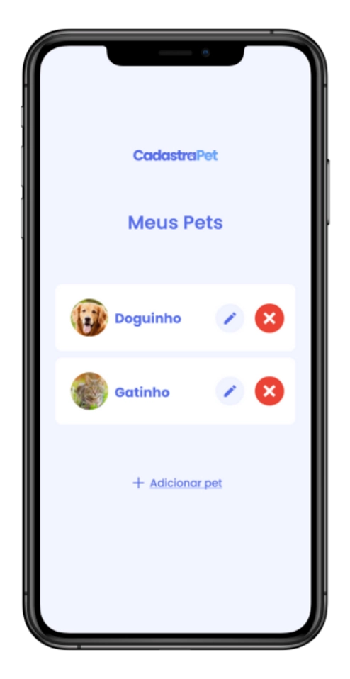
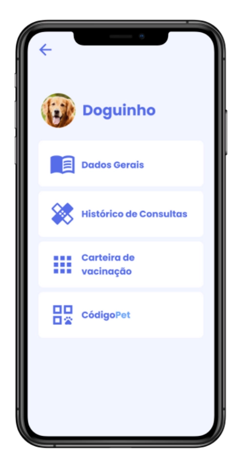
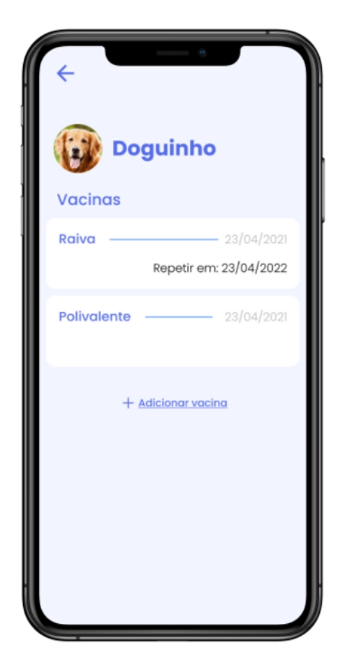
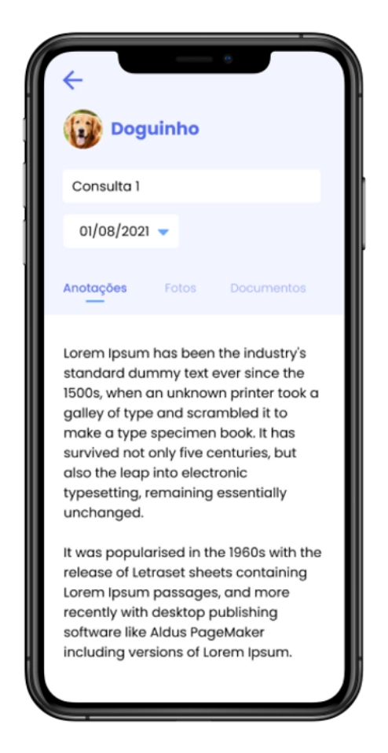
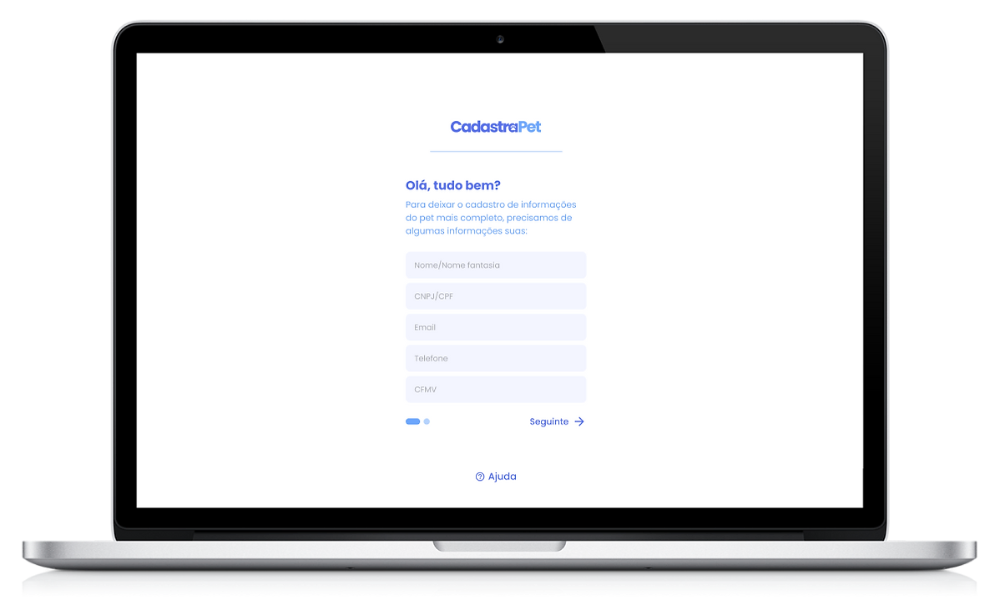
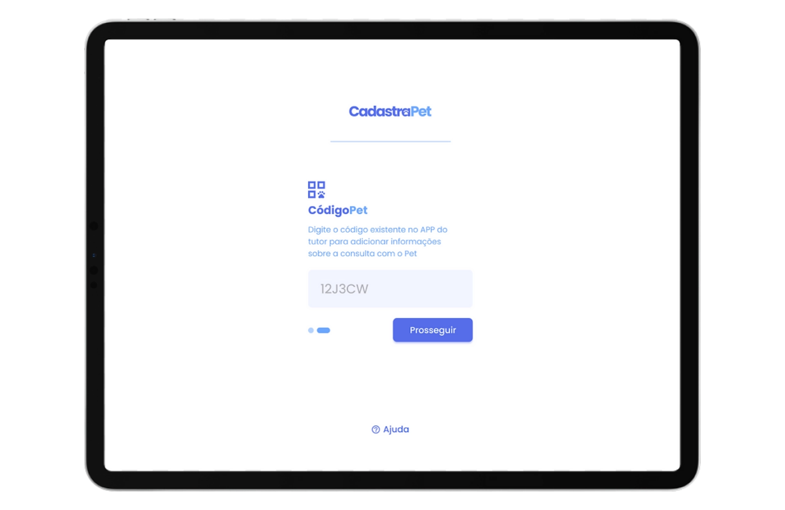
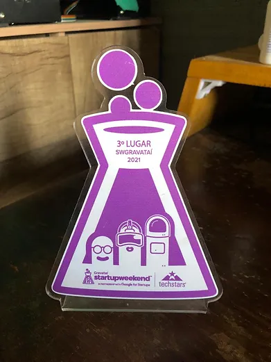

Cadastrapet

Mobile
Study case
Research
Project
Cadastrapet is an exciting startup project that secured 3rd place in the Startup Weekend event. The app aims to offer a Pet ID with a comprehensive online medical history. To identify market opportunities, we conducted thorough research with potential clients. Armed with a core concept, we proceeded to design the visual identity, login screens for both pet owners and veterinarians, as well as the app screens.
Goals
- Validate whether pet owners would adopt digital medical records
- Design an intuitive experience for managing pet health history
- Enable veterinarians to access records quickly without installing an app.
The challenge
Our initial idea focused on remote veterinary consultations, but Brazilian regulations made the concept unfeasible. Instead of forcing the solution, we returned to research to uncover a real user problem.
Pet Owners
Medical records are scattered across paper documents and different clinics, making it difficult to track a pet's history.
Veterinarians
Missing medical information slows diagnosis and increases the risk of incomplete treatment.
Research
We interviewed approximately 50 pet owners near local pet shops and veterinary clinics to validate our assumptions and identify the biggest pain points around pet healthcare.
85%
of pet owners wanted a digital medical history of their pets and didn't know where they had stored the documents of a previous medical appointment.
95%
of the users said that having the medical history shared between clinics would be a great concept to help them take care of their pets without needing to keep many documents.
+95%
of pet owners didn't have a history of vaccines or other medical treatments for their pets, including important information about having allergies to medicines, which could result in serious problems.
Personas
In pursuit of a thorough understanding of the app's target users, a series of user interviews were conducted. Participants from various backgrounds were engaged to gain insights into their needs, preferences, and pain points, culminating in the identification and deep comprehension of the personas expected to utilize the application.
John
Owns an elderly dog with recurring medical appointments. He struggles to keep vaccination records and previous exams organized across different clinics.
Gina
A busy veterinarian who frequently receives new patients without complete medical histories, making diagnosis and treatment more difficult.
Design Decisions
Why PetCode?
Veterinarians needed immediate access without creating accounts or installing software.
Why timeline-based history?
Medical information becomes easier to scan during consultations.
Why separate owner and vet experiences?
Each audience has completely different goals and workflows.
Pet owner app
Due to the 48-hour Startup Weekend timeframe, we focused on validating the core experience rather than designing every feature.
- Manage multiple pets
- Track vaccinations
- Store prescriptions and treatments
- Keep medical documents accessible in one place
Drag to view all






Veterinary flow
FInstalling another application would create friction for veterinarians. To simplify access, we designed PetCode—a unique identifier that lets any clinic retrieve a pet's medical history directly through the web.


Learnings
- Regulations can completely reshape a product direction, making early validation essential.
- User interviews revealed a stronger problem than our original assumption.
- Designing under a 48-hour deadline reinforced the importance of prioritizing the core user journey.
Future Opportunities
- Marketplace for partner clinics
- Appointment reminders
- Vaccination notifications
- Medication reminders
